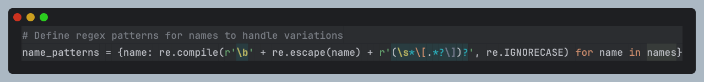
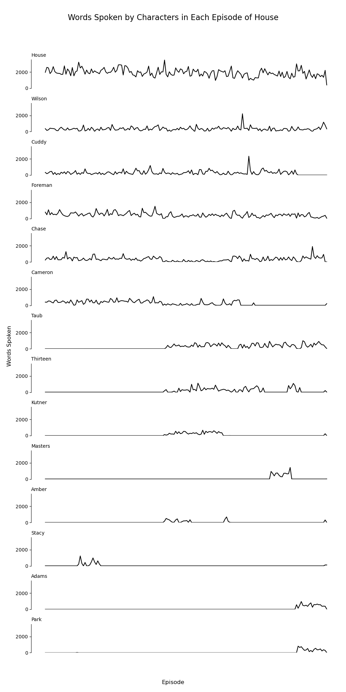
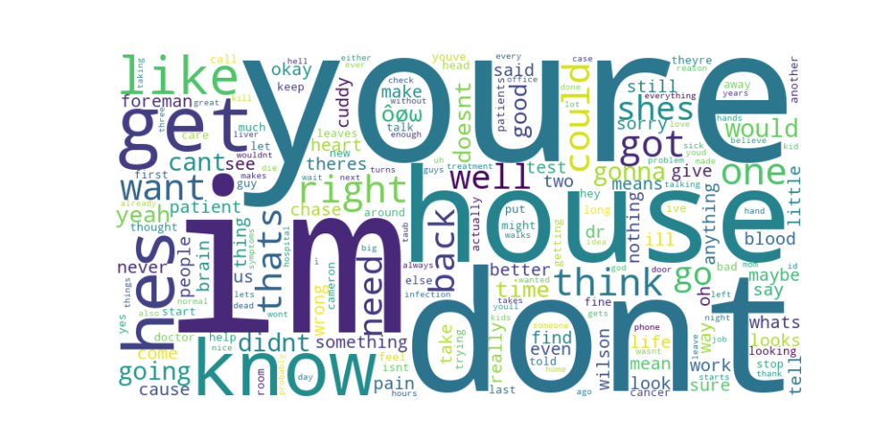

House MD Visualisations
Got some inspiration from a sparkline graph I saw on the amount of words spoken by each character in the office over time, never worked with sparkline graphs before and thought it would be interesting to see not only the amount of words spoken by each main character in the House series, but also a word cloud of the most popular words.
The dataset used for this was gathered from Kaggle which I will get most of my data from going forward.
If you want to use this dataset, there are a couple of things to be mindful of, which I learned when I had to further clean the data:
- The encoding for this file is not standard UTF-8, you will need to convert this file to the standard encoding, but also be aware of the data loss associated with this change, as the original encoding puts the language as Turkish I believe.
- The breakdown in columns isn't as simple as 'name' and 'line' as you may think, as the 'name' columns often contains variations of the characters names such as "House [Whines]", so you need to use regex, or whatever fits best for your needs, to successfully extract all words from characters.
- I used a very simple implementation of regex that you can see here: 
- This was all written using Jetbrains DataSpell and Jupyter Notebooks, the full breakdown of which can be seen here

